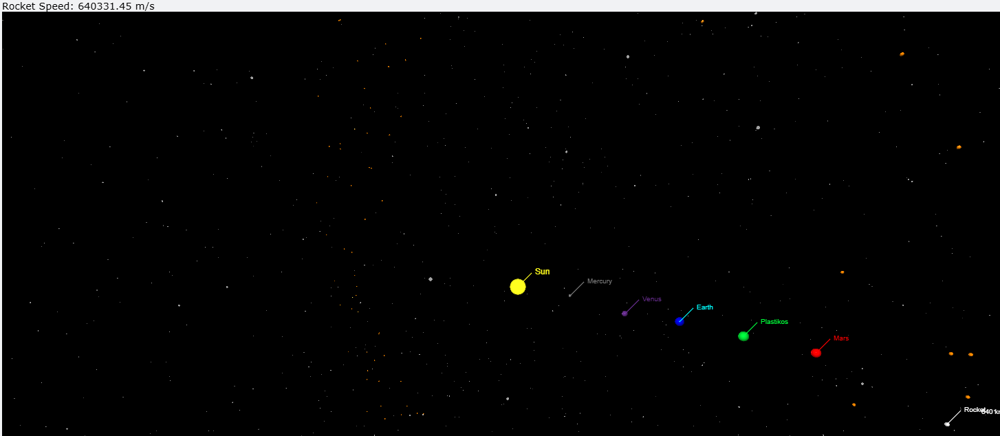

Simulation · Computational Physics
Documented
Interstellar Cannon
An interactive 3D course simulation that launches a rocket from Earth and visualizes how simplified multi-body gravity and collision rules change its path. Mouse input, numerical integration, scene state, and feedback are combined in one VPython experience.
- Python
- VPython
- NumPy
- Custom RK4
- Role
- Main developer
- Type
- 3D course simulation
- Focus
- Gravity, launch & collisions

Overview
Motivation
The project turns orbital motion from separate formulas into something visible and interactive: launch a rocket from Earth, then watch its state evolve among a simplified set of celestial bodies.
My role
As the main developer, I brought the launch controls, gravitational updates, collision logic, visual effects, camera behavior, and runtime feedback together in the main simulation.
What was built
The VPython scene contains a stationary Sun, six Solar System planets, the fictional Plastikos, and 200 randomly initialized asteroids. A rocket launches from Earth, leaves a point trail, reports its speed, and follows different code paths for near-Sun disintegration and object collisions.
- Project a mouse drag onto Earth’s orbital plane and use the arrow as the launch direction and power input.
- Move through the 3D scene, follow the launched rocket, and keep labelled bodies visible.
- Show a retained point trail and speed readout while collision and heat outcomes update the scene.
Actual input sequence
Inside the Build
- Interface
- VPython renders spheres, labels, arrows, trails, the follow-camera button, and the keyboard and mouse event surface.
- Bodies
- NumPy supports trigonometry and the square-root calculations used to initialize tangential planet and asteroid velocities.
- Physics
- Each non-Sun body sums point-mass gravitational acceleration from the other bodies before a custom four-stage RK4 update advances velocity and position.
- Outcomes
- A distance-and-speed threshold handles near-Sun disintegration. Separate sphere-overlap checks route collisions to an impulse response, asteroid fragments, or an impact mark.
Input and numerical update
Outcome and visual feedback
Challenges & Takeaways
Technical challenge
My main challenge was combining the individual physics equations into one simulation: gravitational acceleration, the four RK4 stages, launch state, and collision response all had to participate in the same continuous update loop.
How I addressed it
I separated constants, entities, physics, effects, and input helpers into focused modules, then used the main loop to coordinate body updates, proximity checks, collision outcomes, labels, and camera feedback.
Specific takeaway
A working physics expression is only one layer of a simulation. Update ordering, shared state, timestep choices, collision boundaries, and visible feedback determine whether the combined system behaves coherently.
Future improvement
I would centralize the duplicated runtime state, separate display scale from collision radius, and add repeatable trajectory and timestep-convergence checks before making any numerical-accuracy claim.
01Speed outputThe scene reports the rocket’s current speed.02Scene labelsThe capture identifies the bodies represented in the scene.03Motion trailRetained points make the rocket’s recent path visible.The repository has no automated tests, benchmark, convergence report, or stored comparison run. This capture documents rendered behavior, not physical accuracy.